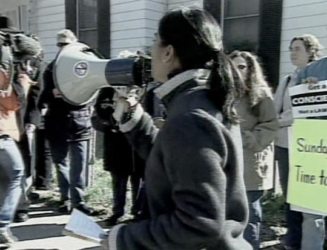

ABC Coverage
ABC’s Durham affiliate, WTVD -TV, first reported the story on March 24, when the News and Observer linked the gang rape investigation to the lacrosse team. When Nifong ordered the DNA samples, WTVD assigned its own reporter to the story. On March 26, producers at ABC News’ headquarters elevated the Duke story to the national level. “World News Tonight” aired a 28-second summary of the investigation near the end of its program and ABC’s website, ABC.com, began to post stories about the investigation in its sports section . On March 27, ABC.com featured a story that described the decorated lacrosse team as “shaken” by recent events.
© ABC News National significance. By March 29, the alleged Duke lacrosse team gang rape had become a major national story in both print and broadcast media. All three networks carried the story on their evening broadcasts. The Washington Post and USA Toda y each featured a story about the Duke case on the front of the sports section. The New York Times reported the story on its front page on March 29 and 30 .
To many reporters and producers, the incident underscored broader issues. Some questioned whether a moral breakdown was taking place in male-dominated college athletics, citing recent charges against other university sports teams: seven separate rape charges leveled against University of Colorado football players in 2004; and a gang rape charge made against members of the University of Tennessee football team in 2005. On March 29, 2006 , “World News Tonight” anchor Elizabeth Vargas introduced a three-minute update of the Duke story by asking pointedly whether college athletes had come to feel “above the law.”
As the story developed, journalists began to focus on the race and class divides in Durham between Duke University and the local community. Durham’s population was 45 percent African American; Duke’s student body was 11 percent African American. Durham’s median household income was $43,000—roughly equivalent to one year’s tuition, room, and board at Duke. Within Durham, African American activists began to publicly criticize D.A. Nifong and the local police for what they called a sluggish response to the rape. Had the victim been white, they argued, arrests would have been swift. Nifong denied a double standard. On March 29, he told reporters that he not only felt certain a rape had occurred, he also believed it had been fueled by racism: “The circumstances of the rape indicate a deep racial motivation for some of the things that were done.” [18]
 © ABC News On April 1, public criticism turned to public outrage . Hundreds of protesters marched through the Duke campus carrying banners. “Real men don’t protect rapists,” stated one. Activists taped “Wanted” posters across campus that featured photographs of the lacrosse players and exhortations to admit their crimes. Outside the lacrosse house, crowds of protesters banged pots and pans and decried crimes against women. At night, activists held candlelight vigils in support of rape victims. On April 5, Duke President Brodhead canceled the team’s season.
Footnotes
[18] “Rape Allegations Cloud Duke Lacrosse,” CBS News, March 29, 2006.